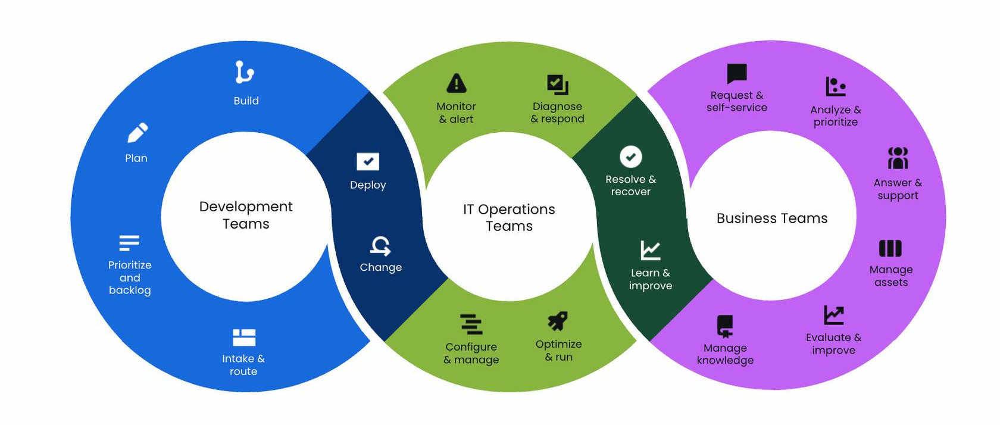

The platform that brings together IT, sales, development and operations.
Jira Service Management enables you to integrate all teams to respond to business changes and deliver great service experiences faster.
The platform that brings together IT, sales, development and operations.
Jira Service Management enables you to integrate all teams to respond to business changes and deliver great service experiences faster.
Jira Service Management is the cloud platform developed by Atlassian to bring together development, operations, IT and sales teams to respond to business changes and deliver great service experiences faster. This solution uses the guidelines of the ITSM methodology that facilitate best practices for managing requests and issues, planning, assigning, monitoring and managing project tasks.

If you need support with Jira, Rovo, Bitbucket, Confluence, Jira Service Management or any other Atlassian product, ecentia is the perfect partner.
Our entire team is Atlassian certified and can provide the help and support you need to implement the solution that best suits your needs.
With Jira Service Management you can bring together IT and business teams on a single platform. Here are its main features:
Empower all types of teams, from development to IT and HR. HH., offering them adaptable processes to suit their own way of working.
It’s the only ITSM solution that breaks down silos by placing development and operations on the Jira platform to accelerate the transition from requests to build and delivery.
Avoids the complications of difficult negotiations and renewals. Jira Service Management offers a transparent pricing model so you always know what to expect.
Get your own service centers up and running quickly, without the need for expensive consultants, thanks to the intuitive platform of Jira Service Management.
You can manage over 5 million work records in Jira. Having complete visibility into all work will help you make decisions faster.
If you use Jira Service Management, you’ll work with a platform that generates value quickly and allows all teams to deliver an excellent service experience.
Excellent service experiences, without the complexity of traditional ITSM solutions.
Deliver value quickly without the cost, complexity and unique approach of legacy ITSM tools. Teams will have flexible processes and intuitive workflows to match their way of working, while remaining standardized on a global platform for the business.


Bring visibility to work with an open, collaborative platform across IT operations, development and business teams. Detailed and contextual information to improve teamwork and make faster decisions for requests, incidents, issues, changes and more.
Eliminate silos and accelerate workflow by placing development and operations on an integrated platform built in Jira to speed requests from delivery to support.

Do you want to request a quote, receive more information or have not found the product you were looking for? Fill in the form and we will answer you in less than 24 hours.